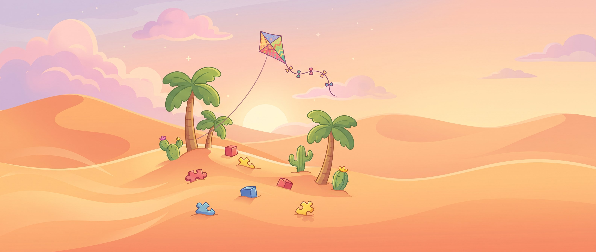

35 د
35 د 3,240
3,240 أكمل من حيث توقفتنظّف البحرالمرحلة ٢ من ٢
أكمل
أكمل من حيث توقفتنظّف البحرالمرحلة ٢ من ٢
أكمل
اختر عالماً
👆 اسحب الصورة، واضغط على مكان لتلعب

العب وتعلّم مع الثعلب فنّوش

أهلاً يا عمر! أي لعبة نلعب اليوم؟
أكمل من حيث توقفتنظّف البحرالمرحلة ٢ من ٢
أكمل
👆 اسحب الصورة، واضغط على مكان لتلعب